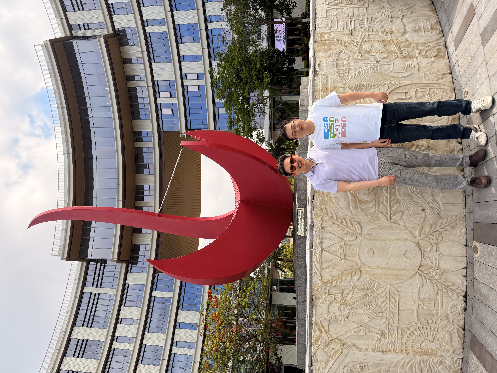
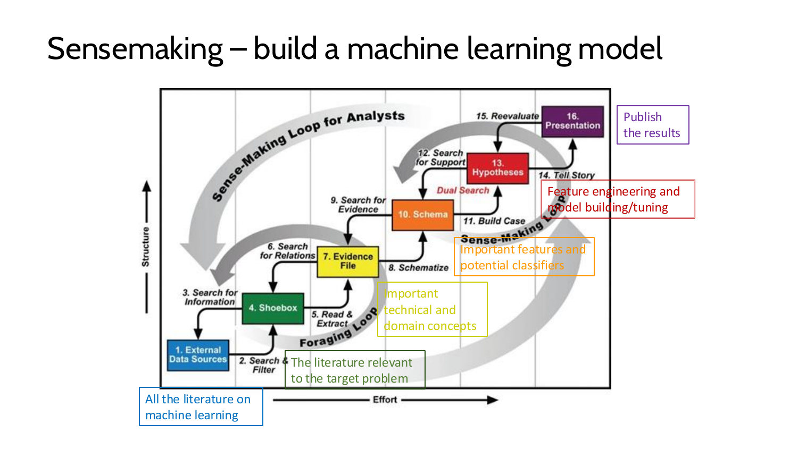
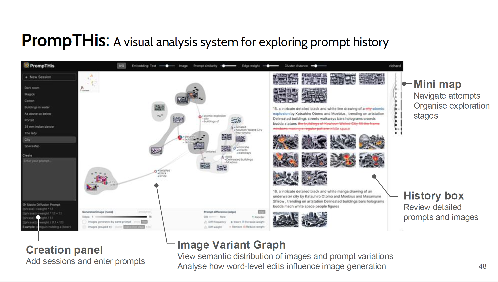
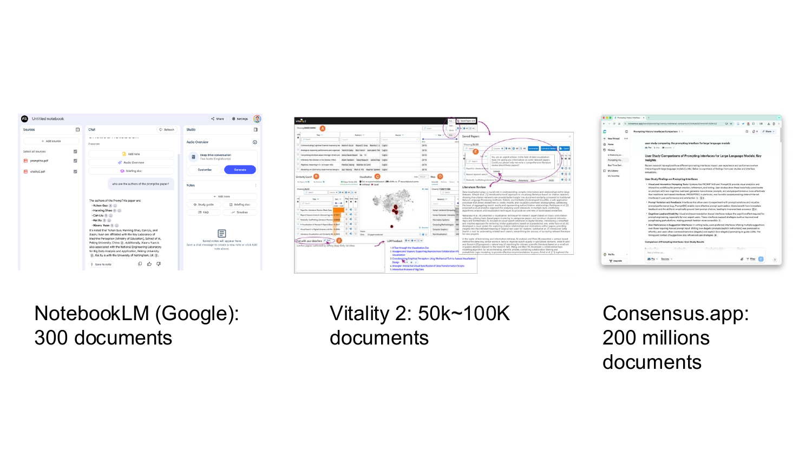

报告嘉宾：Prof. Kai Xu（徐凯） 作者：小米虾 日期：2026年5月7日
2026年5月7日，HKUST-CIVAL课题组邀请了英国诺丁汉大学计算机科学学院副教授徐凯博士做特邀报告。 徐凯教授是诺丁汉大学可视化研究组（VisTAG）联合主任、生成式AI特别兴趣小组（GAIN）创始人， 同时担任欧洲计算机图形学学会（EuroGraphics）英国分会主席、英国国家AI与数据科学中心（Alan Turing Institute）可视化组联合负责人。 他的研究聚焦以人为中心的机器学习，特别是人机协作（human-AI teaming），致力于实现用户与生成式AI系统的高效协同。其研究获英国及欧洲研究理事会、英国国防部及多家跨国企业资助，项目总经费超过1200万英镑。

徐凯教授带来了题为《AI Co-Scientist: Sensemaking, Provenance, and Human-AI Collaboration》的精彩报告。报告围绕三个核心主题展开：sensemaking（意义建构）与provenance（溯源）、大语言模型与人机协作、以及AI Co-Scientist的最新探索。
首先，徐凯教授介绍了sensemaking和provenance的基本概念。Sensemaking是指人们将原始信息转化为可理解知识的过程——例如购买相机时，用户需要从海量产品信息中筛选、比较、最终做出决策并说服他人。在机器学习领域，构建一个有效的模型同样是一个sensemaking过程。Provenance则关注数据和决策的历史与上下文，记录"从何而来、为何如此"。两者的结合为理解人机协作提供了重要的理论基础。

在LLM与人机协作部分，徐凯教授展示了PrompTHis系统——一个用于探索文本到图像模型prompt历史的可视分析系统。他指出，虽然这类模型容易上手，但要获得有用的结果并不容易，这本身就是一个sensemaking任务。PrompTHis通过minimap导航用户的尝试过程，帮助用户组织探索阶段、回顾详细的prompt历史，使用户能够更好地理解和控制模型行为。在这一工作中，AI的角色被定位为"共同作者"而非"助手"——它应当对用户的创意感兴趣，并能理解并适应用户的需求。

报告的最后部分，徐凯教授介绍了他在AI Co-Scientist方向的最新探索。这一方向的核心理念是将AI定位为科学研究中的"共同科学家"，而非简单的工具或助手。AI Co-Scientist需要具备sensemaking能力，能够理解研究的上下文和历史（provenance），并在人机协作中发挥主动作用。这一愿景将provenance、sensemaking和人机协作三个主题有机地串联起来。

在提问环节，徐凯教授与CIVAL课题组进行了热烈的讨论。讨论涉及人机协作中provenance的记录方式、LLM在可视化设计中的角色定位、以及AI Co-Scientist在不同学科领域的适用性等话题。 本次报告为CIVAL课题组带来了关于人机协作和AI辅助科学研究的新视角。徐凯教授的工作展示了如何将可视化、provenance追踪和sensemaking理论相结合，构建更加智能和可信赖的人机协作系统。 特别感谢徐凯教授的精彩报告和深入交流！